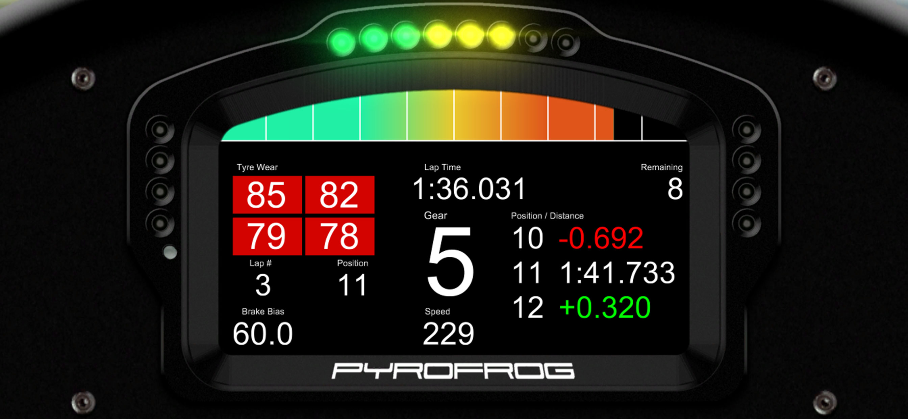

Description
Turn your Android Tablet/Phone into a fully customizable dashboard display for your favourite racing sims.
Single client for all supported games. Server automatically detects games and reads data with minimal configuration required.
Powerful editor allows you to modify built in dashboards or build one from the ground up.
Try the time unlimited demo version that reads RPM, Speed and Gear.
Full data unlocks can be purchased for each game via the in app store.
Note the supported widgets vary depending on data provided by each game.
Currently supported games (PC Only):
-Assetto Corsa
-Rfactor 1 & 2, Game Stock Car Extreme, Automobilista, ARCA Sim Racing X - ASRX, ACTC – Simulador Turismo De Carreter
-GTR2, GT Legends, Race07, RaceRoom Racing Experience
-Project CARS
-Codemasters F1 2012, F1 2013, F1 2014, F1 2015, F1 2016, Dirt Rally, Dirt 4
-Live For Speed
-BeamNG
- iRacing (Development temporarily on hold. Currently available as free Alpha)
New dashboards, widgets, and data readers coming in the future.
-

- 
-

-

-

-

-

-

Downloads
Install the client DashPanel from the GooglePlay store:

DashPanel Server requires the following to be installed on your system:
.NET 4.5
Visual C++ Redistributable Packages for Visual Studio 2013 x86
Get the latest version of the server here:
DashPanelServer.zip
Older version:
Unity 5 now requires Android: OS 4.1 or later, to use the last version of DashPanel that supported Android 2.3.1 or later download the APK and compatible server below.
DashPanel_1.2.6
DashPanelServer_1.1.0.4
Instructions
Run the server on your host Windows PC that is connected to the same WIFI network as your mobile device and then connect via your chosen port. The server will automatically detect any compatible games running and transmit data to your chosen dashboard.
Ensure the server and your chosen port are not blocked by your firewall. The server will attempt to open the chosen port using UpnP however this is not possible on all routers. If your experience connection issues look for specific instructions for forwarding ports at http://portforward.com/.
Note:
Some games require extra steps to share data with DashPanelServer.
pCARS
Launch pCARS then go to Options - Visuals - Hardware and set Use Shared Memory to Yes.
rFactor 1/2
For rFactor based games go to the folder where you have extracted DashPanelServer and you will find the plugins folder: e.g. C:\Games\DashPanelServer\Plugins
These plugins need to be copied to the following locations:
●rFactor1:
\rFactor\Plugins\DashPanel_RF1.dll
●rFactor2:
\rFactor 2\Bin32\Plugins\DashPanel_RF2_32.dll
\rFactor 2\Bin64\Plugins\DashPanel_RF2_64.dll
●Stock Car Extreme:
\Stock Car Extreme\Plugins\DashPanel_RF1.dll
●Automobilista:
\Automobilista\Plugins\DashPanel_RF1.dll
GTR 1/2, GPL, Race 07
Open \UserData\[playername]\[playername].plr with text editor.
Change: Write Shared Memory="0" to line: Write Shared Memory="1".
If the line does not exist add it in. It may disappear after running the game however the setting will remain.
Codemasters
On the server set the 'Proxy Port' setting to the port of your choice (Default 20777).
Locate the file hardware_settings_config.xml located in the users Documents folder.
Eg. \Documents\My Games\DiRT Rally\hardwaresettings\hardware_settings_config.xml
Edit to send UDP data to the ip 127.0.0.1 with a port matching the servers Proxy Port.
Example F1 2012:
<motion enabled="true" ip="127.0.0.1" port="20777" delay="1" extradata="2" />
Example F1 2013:
<motion enabled="true" ip="127.0.0.1" port="20777" delay="1" extradata="3" />
Example Dirt Rally, Dirt 4, 2014:
<udp enabled="true" extradata="3" ip="127.0.0.1" port="20777" delay="1" />
Example F1 2015, 2016:
<udp enabled="true" ip="127.0.0.1" port="20777" />
LFS
On the server set the 'Proxy Port' setting to the port of your choice (Default 20777).
In the LFS install folder open cfg.txt and edit the OutGauge section to the following changing the port number as required:
OutGauge Mode 2
OutGauge Delay 1
OutGauge IP 127.0.0.1
OutGauge Port 20777
OutGauge ID 0
BeamNG
On the server set the 'Proxy Port' setting to the port of your choice (Default 20777).
Enable OutGauge support in Options -> Gameplay.
Set IP to 127.0.0.1 and Port to match the Proxy Port.
Techinical Info
Backup - sharing
User dashboards are saved in an accessible folder on your device.
To access browse to the following folder:
YourTablet\Android\data\com.PyrofrogStudios.DashPanel\files\RacingDashboards
The DashName.lyt files contain the layout of the dash and the DashName.png contain a preview image used in the menu. Copy these to share with other devices, users, or backup your hard work to a safe place!
USB - Reverse tethering
It is possible to use DashPanel over USB with reverse tethering and Direct connection mode.
There are commercial apps that allow this on non-rooted devices however Google Play may not be able to acess purchase data and DashPanel will run in demo mode only.
On rooted devices there are ways to get Google Play to redirect with reverse tethering and in theory you should be able to run DashPanel over USB with in app purchases recognised.
USB via Reverse tethering is unsupported do not ask Pyrofrog Studios for details how to achieve this. Rooting you device voids warranty and can make your device unusable.
Pyrofrog Studios does not recommend you root your device and is not responsible for any damages you cause by rooting your device. This information is provided as guidance for expert users only.
Disclaimer
DashPanel is NOT official software of Codemasters™, Image Space Incorporated™, iRacing™, Simbin™, Slightly Mad Studios™ or Kunos Simulazioni™. The names pCars, Project Cars, Assetto Corsa, AC, iRacing, rFactor, rFactor 2, Game Stock car, Automobilista, RaceRoom Racing Experience, GTR2, Race07, RaceRoom The Game 2, and GTR Evolution are used for identification purposes only. All trademarks and registered trademarks are the property of their respective owners.
THE SOFTWARE IS PROVIDED ""AS IS"", WITHOUT WARRANTY OF ANY KIND, EXPRESS OR IMPLIED, INCLUDING BUT NOT LIMITED TO THE WARRANTIES OF MERCHANTABILITY, FITNESS FOR A PARTICULAR PURPOSE AND NONINFRINGEMENT. IN NO EVENT SHALL THE AUTHORS OR COPYRIGHT HOLDERS BE LIABLE FOR ANY CLAIM, DAMAGES OR OTHER LIABILITY, WHETHER IN AN ACTION OF CONTRACT, TORT OR OTHERWISE, ARISING FROM, OUT OF OR IN CONNECTION WITH THE SOFTWARE OR THE USE OR OTHER DEALINGS IN THE SOFTWARE.